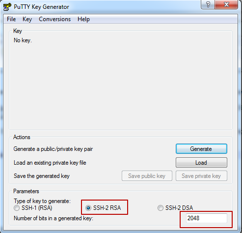
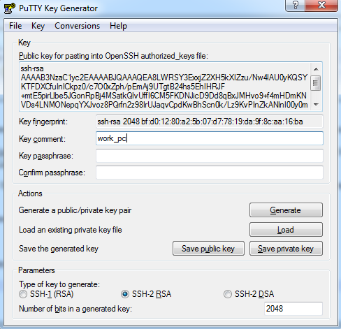
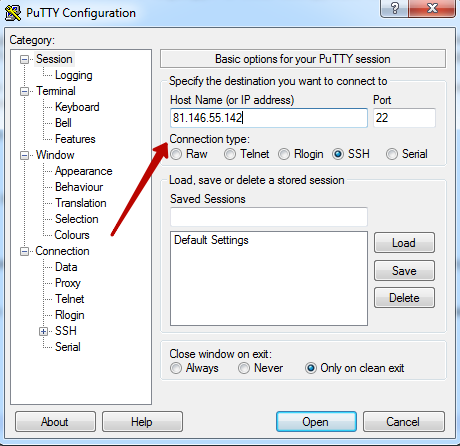
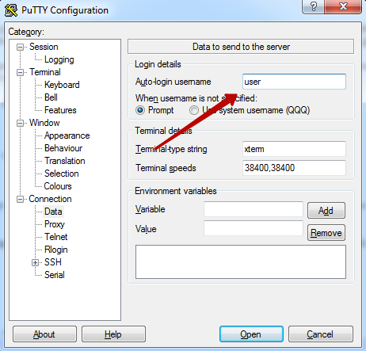
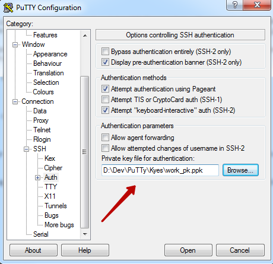
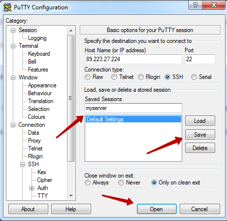
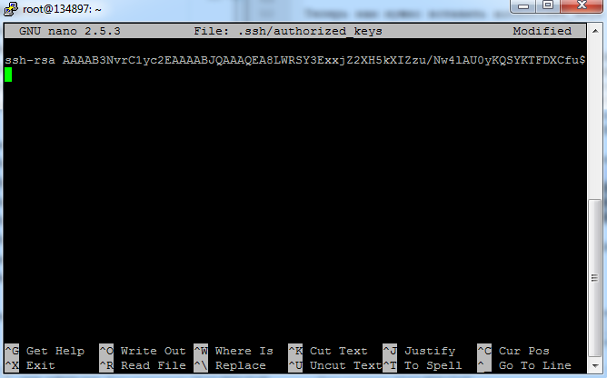
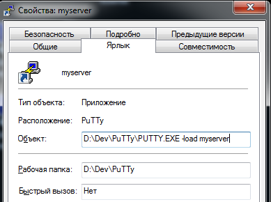

Подключение к серверу через SSH и PuTTY
Вводить логин и пароль каждый раз для подключения к серверу занимает время. В этой инструкции написано как настроить подключение чтобы подключатся двойным кликом по ярлыку.
Скачиваем PuTTYopen in new window. Архив с полным набором файлов (A .ZIP file containing all the binaries (except PuTTYtel), and also the help files). Прямая ссылкаopen in new window.
Для авторизации используется два ключа: публичный и приватный. Приватный остается у клиента, публичный размещается на сервере. Для генерации ключей используется программа PUTTYGEN.EXE из архива PuTTY.
Запускаем PUTTYGEN.EXE, проверяем что тип ключа SSH-2 RSA и размер 2048.

Нажимаем Generate и водим курсором по окну приложения. На основе перемещений мыши генерируется ключ.

Комментарий и фраза-пароль настраивается при необходимости. Нажимаем Save private key и выбираем имя файла куда сохранить приватный ключ.
PUTTYGEN сохраняет приватный ключ в файле собственного формата. Причем файл содержит как приватный так и публичный ключ, поэтому можно не сохранять публичный ключ отдельно.
Теперь запускаем PUTTY.EXE
На форме Session вводим IP сервера.

На форме Connection->Data вводим логин пользователя на сервере.

На форме Connection->SSH->Auth указываем путь к ранее сохранному файлу приватного ключа.

Возвращаемся на форму Session вводим название подключения, идентификатор пригодится дальше при настройке ярлыка. Нажимаем Save и Open.

При подключении появляется сообщение о том что сервер не принял наш ключ.
Using username "user". Server refused our key user@89.213.21.221's password:
Установим публичный ключ на сервере. Пользователь уже введен из настройки, вводим пароль. После подключении текущий каталог - каталог пользователя. В файле .ssh/authorized_keys список публичный ключей по которым доступно подключение до этого сервера. Открываем файл в текстовом редакторе
nano .ssh/authorized_keys

Теперь вставим в authorized_keys публичный ключ. Для этого скопируем из сохраненного PUTTYGEN.EXE файла строки:
Public-Lines: 6 AAAAB3NvrC1yc2EAAAABJQAAAQEA8LWRSY3ExxjZ2XH5kXIZzu/Nw4lAU0yKQSYK TFDXCfuInICkpz0/c7O0xZph/pEmAj9UTgtB24hs5EhIHRJF+mtE5pirLlbe5JGo nRpBj4MSatkQlvUffI6CM5FKDNJicD9Dd8qBxJMHvo9+f4mHDmKNVDs4LNMONepq YXJvoz8PQrfn2z98IrUJaqvCpdKwBhScn0k/Lz9KvPInZkANlnI00y0mrdy3WMqV jD5GGmUGCFb5L/0blQ9ad/aMpOFv33PZU9Gp7Db3sts4Rs3votkM9SCzgXop1MJ9 g4AgflpUlXSRGsZqJsgIegemvJHpt2jBtm8ekaPOCEPWmAiU7Q==
Объединим строки ключа в одну и допишем в начало тип ключа ssh-rsa
ssh-rsa AAAAB3NvrC1yc2EAAAABJQAAAQEA8LWRSY3ExxjZ2XH5kXIZzu/Nw4lAU0yKQSYKTFDXCfuInICkpz0/c7O0xZph/pEmAj9UTgtB24hs5EhIHRJF+mtE5pirLlbe5JGonRpBj4MSatkQlvUffI6CM5FKDNJicD9Dd8qBxJMHvo9+f4mHDmKNVDs4LNMONepqYXJvoz8PQrfn2z98IrUJaqvCpdKwBhScn0k/Lz9KvPInZkANlnI00y0mrdy3WMqVjD5GGmUGCFb5L/0blQ9ad/aMpOFv33PZU9Gp7Db3sts4Rs3votkM9SCzgXop1MJ9g4AgflpUlXSRGsZqJsgIegemvJHpt2jBtm8ekaPOCEPWmAiU7Q==
Копируем получившуюся строку, переходим обратно в nano. Для вставки в окно PUTTY нажмите ПКМ. Выходим из nano с сохранением файла
ctrl+X Y Enter
Вводим Exit для закрытия подключения.
Теперь создаем ярлык для PUTTY.EXE и добавляем параметр -load с названием ранее сохраненного подключения.

Запускаем ярлык и подключаемся к серверу
Using username "user". Authenticating with public key "work_pc" Welcome to Ubuntu 16.04.1 LTS (GNU/Linux 4.4.0-57-generic x86_64)